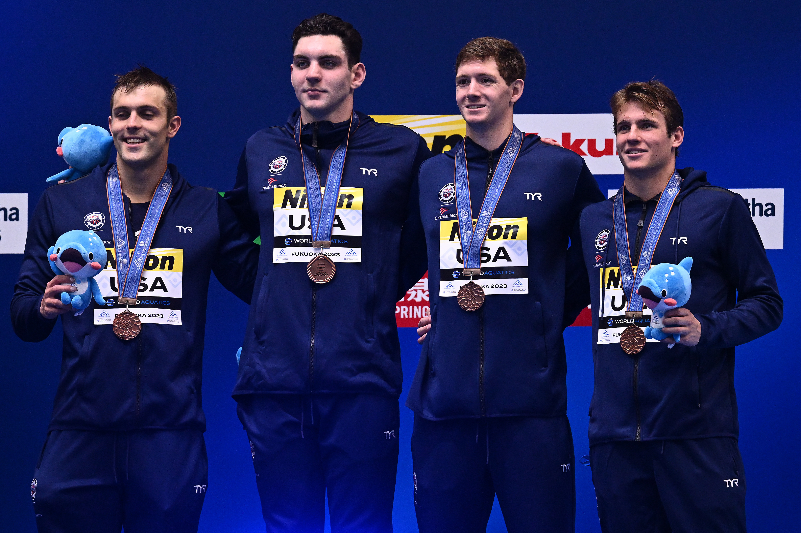

This past summer, I accomplished something I could only dream of. I represented the United States on the world stage! The World Aquatics Championships were held in Japan. Before that, I went on a training camp with Team USA in Singapore. It was a great way to travel outside of the country for the first time in my life. I even got to stand on the podium as part of a 4x100 Men's Freestyle Relay. The table below displays my biggest takeaways from each country.

| Singapore |
Japan |
| Gardens by the Bay |
Beaches |
Casinos |
Clubbing |
| Street Food |
No street Food |
| Small hotel |
Small hotel |
| Great food |
Great sushi |